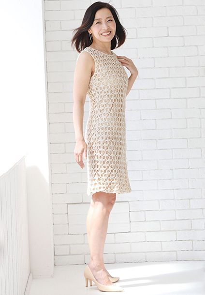

PROFILE
平川 恵



平川 恵Kei Hirakawa
| カテゴリ | MC/司会、ナレーター、講師、モデル |
|---|---|
| 地域 | 関東 |
| 身長 | 162cm |
| 趣味 | ゴルフ |
| 特技 | ゴルフ、スピード料理 |
| 資格 | 英検２級
オープンダイバーライセンス 普通自動車運転免許 |
| 参考URL | |
| 音声サンプル | |
| SNS |
経歴
【TV/ラジオ】
- 銀座ステファニー「ODELIA」インフォマーシャル
- 森永製菓「おいしいコラーゲンドリンク」インフォマーシャル
- HERMES社内用研修動画 店長役
- ショップチャンネル
- QVC
- ショップジャパン
- FM NACK5 レギュラー（1996年～2013年）
【MA】
- 野村不動産VPナレーション
- 千葉県「里親制度を知っていますか？」ナレーション
【オンライン】
- Indeed Owned Media Recruiting SUMMIT 2021 影ナレ
- NTTデータ入社希望者に向けたグループ会社各社人事担当プレゼンファシリテーター（Zoom）
- 日本スポーツ栄養学協会座談会ファシリテーター（Zoom）
【式典】
- 健口スマイル推進優良法人表彰式・記念セミナー
- NTTデータ グローバルソリューションズ設立10周年記念パーティー
- 小池酸素工業新社屋竣工式
- 春日部市新本庁舎建設工事起工式
- 新明和工業特装車事業部70周年式典
- 日本橋高島屋リトルプリンスオープニングセレモニー
- 高麗1300年記念行事
- JR千葉駅新駅舎開業出発式
- 三郷インター土地区画整理組合
- 長島三井ショッピングパークオープニングセレモニー
- 東京都 ものづくり匠の技の祭典オープニングセレモニー（小池百合子都知事ご出席）
- アサヒホールディングス株主総会
- 羽鳥建設株主総会
- 日本オラクル株主総会
【セミナー】
- デル・テクノロジーズ 自治体・医療DXセミナー in 札幌
- 地熱シンポジウム in 会津若松
- ジェトロセミナー
- NXTWORK 2019 Japan
- SCSK FORUM 2019
- FOODIT TOKYO 2019
- .NEXT2019
- お金のEXPO2019
- ベネッセサンキュセミナー
- イノベーションフォーラム2019
- スイスフォーラム
- 第7回アフリカ開発会議 JICA開催サイドイベント
- IRフォーラム2019東京
- パロアルトセミナー
- 東京大学地震研究所国際会議
- NTTファシリティーズフォーラム2019
- hpセミナー
- AWSセミナー
- VM WERE NSX Conference
- Autodesk University Japan
- SAP Predictive_Day
- 第12回Business Link
- SoftBank Technology Forum
【医学会/シンポジウム】
- アストラゼネカ
- メディデータ
- ヤンセンファーマ製薬
- 中外製薬
- アステラス製薬
- グラクソスミスクライン
- 田辺製薬
- 武田薬品工業
- ロシュダイアグノティクス
- イミフィンジ
- 佐藤製薬
- エーザイ
- 日本イーライリリー
- アッヴィ合同会社
- 日本ベーリンガーインゲルハイム
【イベント】
- 東京都 ものづくり匠の技の祭典2016～2019
- パナソニック雑誌編集者タイアップイベント
- 古河電工納涼祭
- 全銀協セレモニー
- SHIBUYAオトナHALLOWEEN
- 占いフェス presents Luck Out！
- クルーズスタイル2018横浜
- ららぽーと豊洲ナイトスカイライブ
- 富士フィルムアスタリフトテイスティングイベント
- 日本橋高島屋イベント多数
- マダムタッソーイベント
- 北欧ファミリーDAYSオープニングイベント
- マイナビ婚活イベント
- アメブロブログオブザイヤー
- 渋谷マークシティ15周年リムジンパーティーイベント
- 日本酒造組合イベント
- 日高市民まつり
- データサイエンティスト協会シンポジウム
- HEARST BEAUTY FESTIVAL
- 国内線LCC就航地PRイベント
- TEAM BEYONDメンバー限定観戦イベント
【記者発表会】
- ジョー マローンロンドン「Snow Day」プレス発表会（鈴木伸之、佐野玲於）
- mixi「みてねみまもりGPS」新cm公開記念イベント（森三中）
- CAROME.マスカラ新製品発表会（ダレノガレ明美、Matt）
- ダイショーやきにくのタレ営業部長WEBcm発表会（なかやまきんに君）
- コーセー『インフィニティ』新・プレステジアス ライン発表会（夏木マリ）
- エミネット「天使のララ」リニューアル記念製品発表会（りんごちゃん）
- 警視庁「一日サイバーセキュリティ対策本部長」任命式（元AKB小嶋真子）
- グリコ「こどもの日はカプリコ！」スペシャルイベント（ロバート）
- 小学館の通信教育 まなびwith「ナゾトキ学習イベント～Another Visionからの挑戦状～」（石田純一＆理汰郎）
- 「日本酒の日」贅沢おつかれさま会キャンペーン発表会（カンニング竹山、橋本マナミ）
- PROTAGA製品発表会（カンニング竹山、じゅんいちダビッドソン）
- とらのあな新cm発表会（叶姉妹）
- クレーンゲーム・オブ・ザ・イヤー2017授賞式（ダチョウ俱楽部、鈴木奈々）
- ロッテ「世界にひとつの『ドリーム雪見』」お披露目会（土屋太鳳）
- 11月1日は「本格焼酎・泡盛」の日イベント（橋本マナミ）
- 高級時計HUBLOT LOVES WOMAN AWARD（米倉涼子）
- フィールズ新機種発表会
- ロッテ「雪見もちもちカフェ」オープニングイベント（土屋太鳳）
- 森永製菓「チョコボール」新おもちゃのカンヅメ発表会（ダチョウ俱楽部）
- アンデスメロン大使就任式（BOYS AND MEN小林豊）
- シムシティ記者発表会
- 海でつながるプロジェクト記者発表会
- ウィズ・アス新商品発表会
- アサヒ飲料発表会（木村拓哉）
【タレントトークショー】※敬称略
- 鈴木伸之、佐野玲於、木村拓哉、米倉涼子、夏木マリ、土屋太鳳、石田純一＆理汰郎、森三中、りんごちゃん、ロバート、カンニング竹山、橋本マナミ、ダレノガレ明美、Matt、じゅんいちダビッドソン、叶姉妹、魔裟斗、元AKB小嶋真子、ダチョウ俱楽部、鈴木奈々、なかやまきんに君、BOYS AND MEN小林豊、他多数
【アスリートトークショー】※敬称略
- フェンシング 太田雄貴
- バレーボール 大林素子
- マラソン 有森裕子
- テニス 杉山愛
- フィギュアスケート 荒川静香
- 柔道 廣瀬順子
- バトミントン 奥原希望
- シンクロ 田中ウルヴェ京、井村雅代
- ラグビー 大畑大介
- BMX 中村輪夢
- スケートボード 平野歩夢
- 車椅子レース 上与那原寛和
- 車椅子テニス 上地結衣
- 女子1万メートル 千葉真子
- パワーリフティング 三宅宏実
- ゴルフ 矢野東、石川遼、木戸愛、青木瀬令奈 他多数
【官公庁関連】
- 内閣官房主催薬剤耐性対策普及活動表彰式
- 経済産業省まちづくりオープン会議
- 経済産業省ブランドランドJAPAN
- 厚生労働省イクメン推進シンポジウム
- 経済産業省スマート保安シンポジウム
- 文化庁源氏物語絵巻「夕顔の死」里帰り記念シンポジウム
- 内閣官房東京オリンピック競技大会・東京パラリンピック競技大会推進本部事務局オンライン説明会
- 厚生労働省リモートワークセミナー
- 農林水産省SDGsイベント大田市場
- 厚生労働省主催テレワークセミナー
- 国土交通省運輸事業の安全に関するシンポジウム
- 経済産業省研究シーズマッチングイベント
- 警視庁「一日サイバーセキュリティ対策本部長」任命式
- 東京都ものづくり匠の技の祭典2016～2019
- その他、文部科学省、林野庁、復興庁、環境省など各種イベント
【ゴルフ関係】
- ダンロップ「XXIO13」発売イベント（青木瀬令奈プロ）
- 第1回IQゴルフ大会表彰式
- レッドブルファイナルファイブin川奈
- ゴルフダイジェスト主催コンペ司会
- 叙々苑カップ芸能人ゴルフスタートアナ
- マジェスティックカップ
- 日系企業対抗戦
- 矢野東、石川遼、木戸愛などプロゴルファーとのトークショー経験多数
【展示会】
- ENEX2016/東京ガス合同
- コミケ/ヤマサ
- 東京モーターショー/VOLVO、カロッツェリア、日立、UDトラック
- NTT Communications Forum
- MFクラウドExpo
- CEATEC/パイオニア他多数
- ITweek/Lenovo他多数
- FOODEX
- CP+/OLYMPUS
- インターペット展/TOYOTA
- 新聞制作技術展/東京機械製作所 他多数